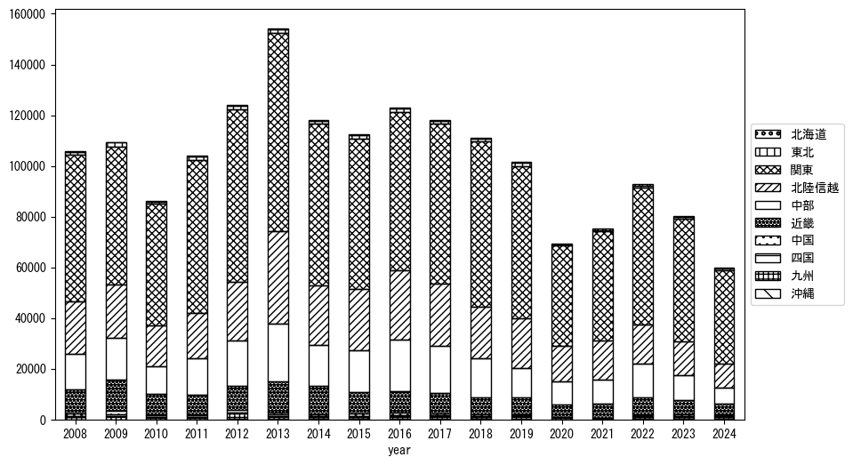
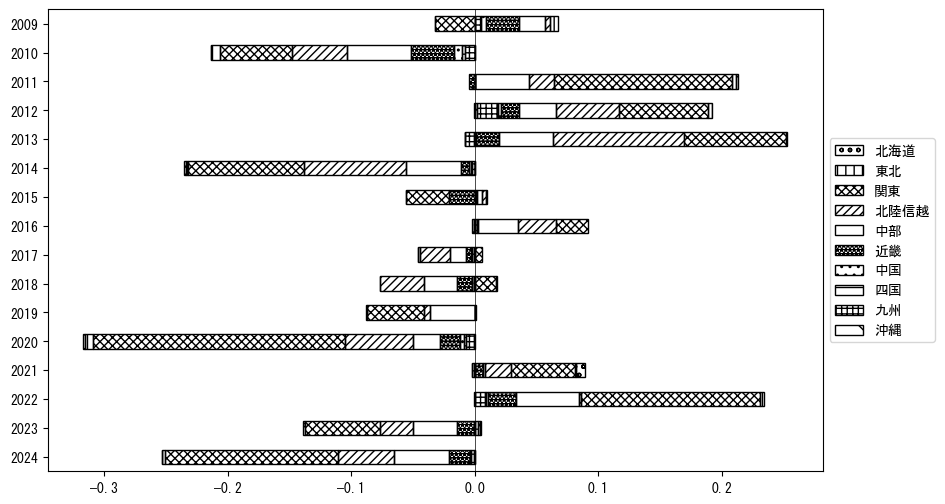

-
トップ
-
長野県
長野県
１．延べ宿泊者（総数）の推移
時系列グラフ
 図１：長野県内の従業員数100人以上の宿泊施設での延べ宿泊者数（国外、居住地不詳を含む総数）。
図１：長野県内の従業員数100人以上の宿泊施設での延べ宿泊者数（国外、居住地不詳を含む総数）。
基本統計量
表１：従業員数100人以上の宿泊施設での延べ宿泊者の総数（国外、および居住地不詳を含む）に関する基本統計量。単位は人。平均は１か月あたりの平均値を表す。図１に対応。
| 2008年 |
130,185 |
32,287 |
98,714 (6月) |
222,977 (8月) |
| 2009年 |
124,061 |
29,071 |
94,343 (6月) |
202,907 (8月) |
| 2010年 |
112,764 |
28,178 |
85,080 (4月) |
190,313 (8月) |
| 2011年 |
110,075 |
35,614 |
67,386 (4月) |
200,863 (8月) |
| 2012年 |
130,176 |
33,189 |
100,405 (2月) |
222,650 (8月) |
| 2013年 |
167,757 |
36,682 |
134,394 (11月) |
266,664 (8月) |
| 2014年 |
133,072 |
24,501 |
109,193 (11月) |
198,154 (8月) |
| 2015年 |
134,371 |
26,014 |
87,502 (6月) |
190,668 (8月) |
| 2016年 |
150,331 |
26,587 |
124,191 (6月) |
223,203 (8月) |
| 2017年 |
148,895 |
33,838 |
103,867 (6月) |
226,197 (8月) |
| 2018年 |
147,064 |
36,858 |
99,823 (11月) |
235,361 (8月) |
| 2019年 |
138,687 |
32,051 |
93,436 (9月) |
210,113 (8月) |
| 2020年 |
84,341 |
56,348 |
3,893 (5月) |
196,699 (1月) |
| 2021年 |
79,712 |
28,119 |
41,272 (1月) |
133,533 (8月) |
| 2022年 |
112,595 |
24,505 |
81,395 (4月) |
170,961 (8月) |
| 2023年 |
122,993 |
22,243 |
97,158 (6月) |
162,469 (8月) |
２．宿泊者数の重心（年平均の推移）
図２：長野県内の従業員数100人以上の宿泊施設での宿泊者数（国外、居住地不詳を除く）の重心（年平均の推移）。
全画面表示
重心の前年平均からの移動距離と方位、および緯度・経度
表２：重心の前年平均からの移動距離と方位、および緯度・経度。図２に対応。
| 2008年 |
— |
— |
35.7727 |
138.5172 |
| 2009年 |
西南西 |
19.6km |
35.7279 |
138.3071 |
| 2010年 |
東 |
21.3km |
35.7651 |
138.5382 |
| 2011年 |
東北東 |
8.4km |
35.7944 |
138.6243 |
| 2012年 |
西南西 |
16.8km |
35.7320 |
138.4555 |
| 2013年 |
北北東 |
8.2km |
35.8044 |
138.4764 |
| 2014年 |
南南東 |
5.8km |
35.7572 |
138.5040 |
| 2015年 |
北北東 |
4.2km |
35.7935 |
138.5164 |
| 2016年 |
西 |
4.4km |
35.7950 |
138.4680 |
| 2017年 |
東南東 |
4.6km |
35.7756 |
138.5135 |
| 2018年 |
東 |
14.3km |
35.7846 |
138.6714 |
| 2019年 |
北北東 |
2.7km |
35.8083 |
138.6797 |
| 2020年 |
北西 |
4.7km |
35.8369 |
138.6416 |
| 2021年 |
北東 |
7.0km |
35.8770 |
138.7008 |
| 2022年 |
南南西 |
14.6km |
35.7663 |
138.6137 |
| 2023年 |
南東 |
2.6km |
35.7482 |
138.6313 |
運輸局別延べ宿泊者数
時系列（年平均）

図３：長野県内の従業員数100人以上の宿泊施設での１か月あたり平均宿泊者数（国外、居住地不詳を除く）の運輸局別内訳。
寄与度（前年からの変化率に対する）

図４：長野県内の従業員数100人以上の宿泊施設での運輸局別宿泊者数（国外、居住地不詳を除く）から求めた寄与度。
３．宿泊者数の重心（月別）
図５：長野県内の従業員数100人以上の宿泊施設での宿泊者数（国外、居住地不詳を除く）の重心（月別）。観測期間は2008年1月から2023年12月まで。
全画面表示
全期間（2008年1月～2023年12月）の平均と月別平均の比較
表３：全期間の平均から月別平均までの移動距離と方位、および緯度・経度。図５に対応。
| 全期間 |
— |
— |
35.7837 |
138.5537 |
| 1月 |
西 |
9.1km |
35.7693 |
138.4544 |
| 2月 |
南南西 |
6.7km |
35.7296 |
138.5212 |
| 3月 |
北東 |
3.8km |
35.8050 |
138.5872 |
| 4月 |
北北東 |
5.4km |
35.8286 |
138.5768 |
| 5月 |
西北西 |
2.4km |
35.7954 |
138.5315 |
| 6月 |
北 |
8.5km |
35.8602 |
138.5488 |
| 7月 |
南南東 |
4.5km |
35.7450 |
138.5689 |
| 8月 |
南東 |
15.1km |
35.6777 |
138.6586 |
| 9月 |
南東 |
3.8km |
35.7564 |
138.5792 |
| 10月 |
西 |
6.0km |
35.7770 |
138.4879 |
| 11月 |
北 |
4.8km |
35.8272 |
138.5521 |
| 12月 |
北北東 |
5.9km |
35.8328 |
138.5776 |
運輸局別延べ宿泊者数
月別平均（2008年1月～2023年12月）
 図６：長野県内の従業員数100人以上の宿泊施設での宿泊者数（国外、居住地不詳を除く）の運輸局別内訳（月別）。
図６：長野県内の従業員数100人以上の宿泊施設での宿泊者数（国外、居住地不詳を除く）の運輸局別内訳（月別）。
寄与度（全期間の平均から月別平均への変化率に対する）
 図７：長野県内の従業員数100人以上の宿泊施設での運輸局別宿泊者数（国外、居住地不詳を除く）から求めた寄与度（月別）。
図７：長野県内の従業員数100人以上の宿泊施設での運輸局別宿泊者数（国外、居住地不詳を除く）から求めた寄与度（月別）。
４．データのダウンロード
出典：観光庁「宿泊旅行統計調査」に収録された「施設所在地別、居住地別延べ宿泊者数（従業員数100人以上の施設）」
国土地理院「白地図（地理院タイル）」（図２と図５）